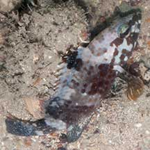
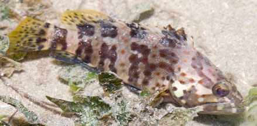
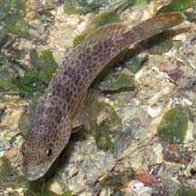
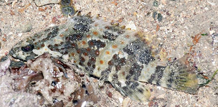
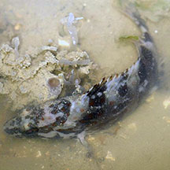

Orange-spotted
grouper
Epinephelus coioides
Family Serranidae
updated
Oct 2020
Where
seen? Gaily spotted juveniles are sometimes seen on our
Northern shores, among rubble. Small ones sometimes seen among seagrasses.
Features: Adults to about 95cm.
Juveniles seen are much smaller. The adult is brown with darker bars
and small orange spots on the sides. It is found in coastal areas
including estuaries, usually alone. |

Beting Bronok, Jun 12 |

Changi, May 14
Photo shared by Marcus Ng on flickr. |

Pulau Sekudu,
Apr 06 |
|
|
What does it eat? It eats small fishes, shrimps and crabs.
Human
uses: It is among the common fishes eaten in Singapore.
Here, these fishes are sometimes reared in floating cages from fingerlings
(young fishes) that are imported from neighbouring countries, until
they reach marketable size. |
| Orange-spotted
groupers on Singapore shores |
| Other sightings on Singapore shores |

Beting Bronok, Jun 18
Photo shared by Loh Kok Sheng on facebook.. |

Beting Bronok,
Jun 12
Photo shared by Russel Low on facebook. |
Links
References
- Allen, Gerry,
2000. Marine
Fishes of South-East Asia: A Field Guide for Anglers and Divers.
Periplus Editions. 292 pp.
- Kuiter, Rudie
H. 2002. Guide
to Sea Fishes of Australia: A Comprehensive Reference for Divers
& Fishermen
New Holland Publishers. 434pp.
|
|
|